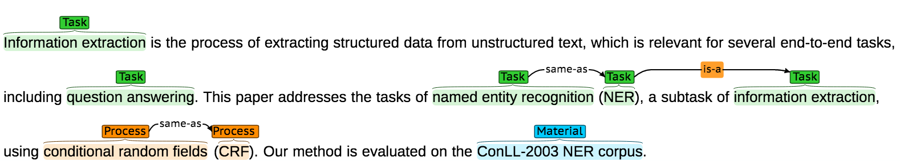

Example
The first part is the plain text paragraph (with keyphrases type-faced for better readability), followed by the paragraph annotations visualised with brat, followed by stand-off keyphrase annotations based on character offsets and by relation annotations.
Input: excerpt from a scientific publication
Information extraction is the process of extracting structured data from unstructured text, which is relevant for several end-to-end tasks, including question answering. This paper addresses the tasks of named entity recognition (NER), a subtask of information extraction, using conditional random fields (CRF). Our method is evaluated on the ConLL-2003 NER corpus.
Annotated paragraph visualised with brat

Subtask (A): Identification of keyphrases
| ID | Start | End |
| 0 | 0 | 22 |
| 1 | 150 | 168 |
| 2 | 204 | 228 |
| 3 | 230 | 233 |
| 4 | 249 | 271 |
| 5 | 279 | 304 |
| 6 | 306 | 309 |
| 7 | 343 | 364 |
Subtask (B): Classification of identified keyphrases
| ID | Type |
| 0 | TASK |
| 1 | TASK |
| 2 | TASK |
| 3 | TASK |
| 4 | TASK |
| 5 | PROCESS |
| 6 | PROCESS |
| 7 | MATERIAL |
Subtask (C): Extraction of relationship between two identified keyphrases
| ID1 | ID2 | Type |
| 2 | 3 | SYNONYM-OF |
| 3 | 4 | HYPONYM-OF |
| 5 | 6 | SYNONYM-OF |